<meta charset="utf-8">
<meta name="viewport" content="width=device-width, initial-scale=1, viewport-fit=cover">
<title>Biyu · Entrega 1</title>
<link rel="preconnect" href="https://fonts.googleapis.com">
<link rel="preconnect" href="https://fonts.gstatic.com" crossorigin>
<link rel="stylesheet" href="https://fonts.googleapis.com/css2?family=Playfair+Display:wght@500;600;700&family=Inter:wght@400;500;600;700&display=swap">
<style>
/*
  Plan (frontend-design): base ecru, verde cazador de apoyo, espresso para texto (60/30/10, ADR-023).
  Playfair Display es el elemento activo: títulos y cifras. Inter para leer, con números tabulares.
  Lectura editorial alineada a la izquierda. La audacia está en un solo lugar: los separadores de
  sección en verde a pantalla completa. Todo lo demás queda quieto: filetes, nada de cajas repetidas.
*/
:root {
  --bg: #f9f6f0; --paper: #fdfbf7; --linen: #f1ebe0; --ink: #2b1e19; --muted: #6e625a; --hair: #e6dfd3;
  --green: #1b4d3e; --green-ink: #f9f6f0; --gold: #d4af37; --bad: #8b2e2e; --warn: #7a5c12; --warn-bg: #f3ebd6;
  --display: "Playfair Display", Georgia, "Times New Roman", serif;
  --body: "Inter", -apple-system, "Helvetica Neue", Arial, sans-serif;
  color-scheme: light;
}
* { box-sizing: border-box; }
html { scroll-snap-type: y mandatory; scroll-behavior: smooth; }
@media (prefers-reduced-motion: reduce) { html { scroll-behavior: auto; } }
body { margin: 0; background: var(--bg); color: var(--ink); font-family: var(--body); font-size: 18px; line-height: 1.55; -webkit-font-smoothing: antialiased; }
.slide { position: relative; min-height: 100vh; min-height: 100dvh; scroll-snap-align: start; padding-block: clamp(64px, 11vh, 110px) clamp(40px, 8vh, 80px); padding-inline: max(16px, 7vw, calc((100vw - 1160px) / 2)); display: flex; flex-direction: column; justify-content: center; gap: 28px; }
.slide > * { max-width: 100%; }
.slide + .slide { border-top: 1px solid var(--hair); }
.section-mark { font-size: 15px; color: var(--green); font-weight: 500; }
.eyebrow { font-size: 16px; color: inherit; opacity: .85; }
h1, h2 { font-family: var(--display); margin: 0; text-wrap: balance; color: var(--green); font-weight: 600; letter-spacing: -0.005em; }
h1 { font-size: clamp(76px, 13vw, 168px); line-height: .95; font-weight: 700; color: var(--ink); }
h2 { font-size: clamp(34px, 4.6vw, 58px); line-height: 1.08; max-width: 20ch; }
.lead { font-size: clamp(20px, 2vw, 24px); color: var(--muted); max-width: 44ch; margin: 0; }
p { margin: 0; }
.muted { color: var(--muted); max-width: 70ch; }
.row { display: grid; grid-template-columns: minmax(0, 1fr) minmax(0, 1fr); gap: clamp(28px, 5vw, 80px); align-items: center; }
.row > * { min-width: 0; }
/* Capturas: el panel verde es el 30 % de la slide, los teléfonos van enteros. */
.phones { display: flex; gap: clamp(16px, 2.4vw, 28px); justify-content: center; align-items: flex-start; background: var(--green); border-radius: 8px; padding: clamp(20px, 3vw, 40px); }
.phones figure { margin: 0; display: flex; flex-direction: column; align-items: center; gap: 12px; min-width: 0; }
.phone img { display: block; height: min(60vh, 560px); width: auto; max-width: 100%; border: 6px solid var(--bg); border-radius: 8px; background: var(--bg); }
.phones figcaption { font-size: 14px; color: var(--green-ink); }
ul.points { list-style: none; padding: 0; margin: 0; display: grid; }
ul.points li { padding: 14px 0; border-top: 1px solid var(--hair); font-size: clamp(18px, 1.7vw, 21px); max-width: 60ch; }
ul.points li:last-child { border-bottom: 1px solid var(--hair); }
ul.points b { font-weight: 600; }
/* Cifras: números grandes en Playfair, separados por filetes, sin cajas. */
.stats { display: grid; grid-template-columns: repeat(auto-fit, minmax(150px, 1fr)); border-top: 1px solid var(--hair); }
.stat { padding: 22px 24px 22px 0; display: flex; flex-direction: column; gap: 6px; border-bottom: 1px solid var(--hair); }
.stat .n { font-family: var(--display); font-size: clamp(44px, 5.6vw, 76px); font-weight: 600; font-variant-numeric: lining-nums tabular-nums; line-height: 1; color: var(--ink); }
.stat .l { font-size: 15px; color: var(--muted); }
.stat.hero .n { color: var(--green); }
.n.bad { color: var(--bad); } .n.warn { color: var(--warn); }
table { border-collapse: collapse; width: 100%; font-size: 16px; font-variant-numeric: tabular-nums; }
.tbl { overflow-x: auto; }
th, td { text-align: left; padding: 12px 16px 12px 0; border-bottom: 1px solid var(--hair); vertical-align: top; }
th { font-size: 14px; color: var(--green); font-weight: 600; border-bottom: 2px solid var(--green); }
td.num, th.num { text-align: right; padding-right: 0; padding-left: 16px; }
.pill { display: inline-block; padding: 2px 10px; border-radius: 8px; font-size: 14px; font-weight: 500; background: var(--linen); }
.pill.ok { color: var(--green); } .pill.bad { color: var(--bad); } .pill.warn { color: var(--warn); background: var(--warn-bg); }
pre.prompt { font-family: var(--body); font-size: clamp(14px, 1.25vw, 16.5px); line-height: 1.65; background: var(--paper); border-left: 3px solid var(--green); border-radius: 0 8px 8px 0; padding: 22px 26px; margin: 0; white-space: pre-wrap; overflow-x: auto; color: var(--ink); max-width: 90ch; }
pre.prompt mark { background: none; color: var(--green); font-weight: 600; }
.flow { display: flex; flex-wrap: wrap; gap: 8px 14px; align-items: baseline; font-family: var(--display); font-size: clamp(20px, 2.1vw, 27px); color: var(--ink); }
.flow span { white-space: nowrap; }
.flow i { font-style: normal; color: var(--gold); }
.bar { display: flex; height: 10px; border-radius: 8px; overflow: hidden; background: var(--linen); }
.bar div { height: 100%; }
.legend { display: flex; flex-wrap: wrap; gap: 20px; font-size: 15px; color: var(--muted); }
.legend b { display: inline-block; width: 10px; height: 10px; border-radius: 2px; margin-right: 8px; }
/* Pares título/descripción: lista con filetes, no tarjetas. */
.grid2 { display: grid; grid-template-columns: repeat(2, minmax(0, 1fr)); column-gap: clamp(28px, 4vw, 64px); border-top: 1px solid var(--hair); }
.card { padding: 20px 0; border-bottom: 1px solid var(--hair); display: grid; gap: 4px; }
.card h3 { margin: 0; font-size: 24px; font-family: var(--display); font-weight: 600; color: var(--green); }
.card p { color: var(--muted); font-size: 16px; max-width: 48ch; }
.card .tag { font-size: 14px; color: var(--muted); order: 3; }
.board { margin: 0; border-radius: 8px; overflow: hidden; border: 1px solid var(--hair); }
.board img { display: block; width: 100%; max-height: 64vh; object-fit: contain; background: var(--bg); }
.notes { display: none; background: var(--warn-bg); border-radius: 8px; padding: 16px 20px; font-size: 16px; color: var(--ink); max-width: 80ch; }
.notes::before { content: "Notas del orador"; display: block; font-size: 14px; color: var(--warn); margin-bottom: 6px; font-weight: 600; }
body.show-notes .notes { display: block; }
.dot { color: var(--gold); }
/* Portada y demo: ecru, con la marca grande. */
.cover h2 { color: var(--green); }
/* Separadores de sección: el único momento fuerte del deck. */
.divider { background: var(--green); color: var(--green-ink); border-top: 0 !important; justify-content: flex-end; }
.divider .kicker { font-size: 17px; opacity: .8; }
.divider h2 { color: var(--green-ink); font-size: clamp(48px, 7.4vw, 104px); max-width: 14ch; line-height: 1; }
.divider p { font-size: clamp(18px, 1.8vw, 22px); max-width: 52ch; opacity: .85; }
.divider + .slide { border-top: 0; }
.slide-meta { position: absolute; top: clamp(18px, 3.4vh, 32px); left: max(16px, 7vw, calc((100vw - 1160px) / 2)); right: max(16px, 7vw, calc((100vw - 1160px) / 2)); width: auto; max-width: none; margin: 0; display: flex; justify-content: space-between; font-size: 14px; color: var(--muted); }
.slide-meta .brand { font-family: var(--display); font-weight: 700; font-size: 18px; color: var(--ink); }
.slide-meta .pg { font-variant-numeric: tabular-nums; }
.divider .slide-meta, .divider .slide-meta .brand { color: var(--green-ink); }
.toolbar { position: fixed; right: max(16px, 2vw); bottom: calc(16px + env(safe-area-inset-bottom, 0px)); display: flex; gap: 8px; z-index: 10; }
.toolbar button { font: 500 14px var(--body); min-height: 44px; min-width: 44px; padding: 0 14px; border-radius: 8px; border: 1px solid var(--hair); background: var(--paper); color: var(--ink); cursor: pointer; }
.toolbar button[aria-pressed="true"] { background: var(--green); color: var(--green-ink); border-color: var(--green); }
.toolbar button:focus-visible { outline: 2px solid var(--gold); outline-offset: 2px; }
.counter { display: none; }
@media (max-width: 820px) {
  .row, .grid2 { grid-template-columns: minmax(0, 1fr); }
  .slide { min-height: auto; padding-block: 72px 48px; }
  .divider { min-height: 70vh; }
  html { scroll-snap-type: none; }
  .phone img { height: auto; width: min(34vw, 190px); }
}
.path { font-family: ui-monospace, "SF Mono", Menlo, monospace; font-size: 14px; color: var(--green); white-space: nowrap; }
.map { display: grid; grid-template-columns: repeat(4, minmax(0, 1fr)); gap: 0; border-top: 2px solid var(--green); }
.zone { padding: 18px 20px 18px 0; display: grid; align-content: start; gap: 12px; min-width: 0; }
.zone + .zone { padding-left: 20px; border-left: 1px solid var(--hair); }
.zone h3 { margin: 0; font-family: var(--display); font-size: 24px; font-weight: 600; color: var(--green); }
.zone > p { font-size: 15px; color: var(--muted); }
.zone ul { list-style: none; margin: 0; padding: 0; display: grid; gap: 10px; }
.zone li { display: grid; gap: 1px; }
.zone li span:last-child { font-size: 14px; color: var(--muted); line-height: 1.4; }
.zone.hl { background: var(--green); color: var(--green-ink); padding-left: 20px; border-radius: 0 0 8px 8px; }
.zone.hl h3, .zone.hl .path { color: var(--green-ink); }
.zone.hl > p, .zone.hl li span:last-child { color: var(--green-ink); opacity: .82; }
@media (max-width: 980px) { .map { grid-template-columns: repeat(2, minmax(0, 1fr)); } .zone:nth-child(3) { border-left: 0; padding-left: 0; } .zone.hl { padding-left: 20px; } }
@media (max-width: 560px) { .map { grid-template-columns: minmax(0, 1fr); } .zone + .zone { border-left: 0; padding-left: 0; border-top: 1px solid var(--hair); } .zone.hl { padding-left: 20px; } .path { white-space: normal; word-break: break-all; } }
</style>

<nav class="toolbar" aria-label="Controles">
  <span class="counter" id="counter">1 / 27</span>
  <button id="prev" type="button" aria-label="Slide anterior">←</button>
  <button id="next" type="button" aria-label="Slide siguiente">→</button>
  <button id="toggle-notes" type="button" aria-pressed="false">Notas (N)</button>
</nav>

<!-- ============ PORTADA ============ -->
<section class="slide cover" id="portada">
  <div class="eyebrow">Testing de Aplicaciones, proyecto integrador. Entrega 01</div>
  <h1>biyu<span class="dot">.</span></h1>
  <p class="lead">En qué se fue la plata este mes. Pesos, dólares y cuotas en un solo lugar.</p>
  <p class="muted">Valentina Giampieri, Santiago Pazos, Joaquin Nuñez, Mariana Caceres y Micaela Dopazo</p>
  <div class="notes">Presentamos la Entrega 1: la V1 de Biyu, cómo definimos los requerimientos, cómo la implementamos con agentes de IA, los casos que diseñamos y qué salió de ejecutarlos. La demo va al final.</div>
</section>

<!-- ============ a) AVANCES ============ -->
<section class="slide divider" id="sec-a">
  <div class="kicker">Parte 1 de 5</div>
  <h2>Qué hay en la V1</h2>
  <p>Las funcionalidades que ya se pueden usar. La demo va al final.</p>
</section>

<section class="slide" id="identidad" data-label="Identidad">
  <div class="section-mark">Identidad</div>
  <h2>Una marca, no solo una app</h2>
  <figure class="board">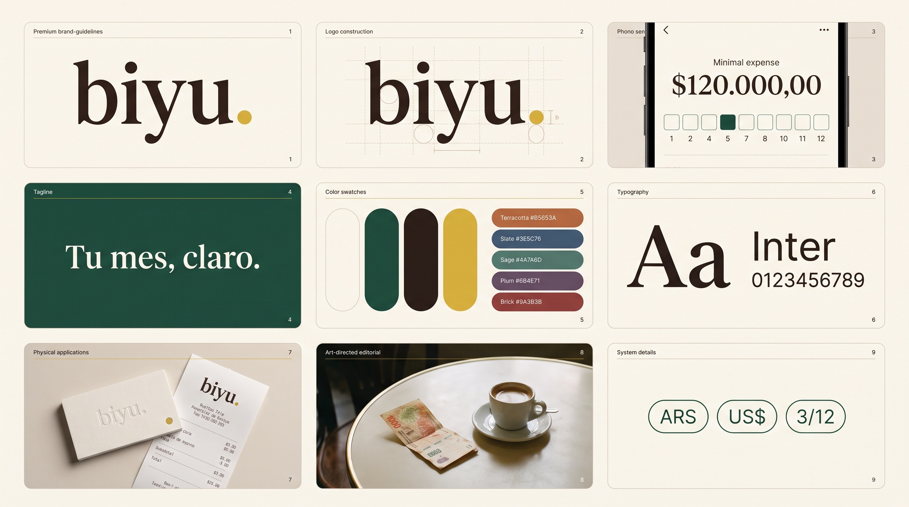</figure>
  <div class="notes">El sistema visual de la app (ADR-023, "heritage moderno") no es decoración: crema como base, verde cazador para lo que se toca y espresso para el texto. El punto dorado del logo es el único oro de toda la interfaz. La lámina se generó con IA (skill brandkit + Gemini) a partir de esa paleta, como parte del proceso end-to-end.</div>
</section>

<section class="slide" id="problema">
  <div class="section-mark">El problema</div>
  <h2>El problema no es la plata, es no verla</h2>
  <ul class="points">
    <li><b>Dos monedas:</b> un gasto de USD 100 a $1.250 costó $125.000, aunque hoy el dólar valga otra cosa.</li>
    <li><b>Cuotas:</b> 12 cuotas no son un mes catastrófico y once baratos.</li>
    <li><b>Un número que responda:</b> ¿cuánto gasté este mes, y en qué?</li>
  </ul>
  <div class="notes">Biyu es para gente en Argentina que gasta en pesos y en dólares y paga mucho en cuotas. La V1 resuelve el núcleo: registrar rápido, repartir las cuotas mes a mes, congelar el tipo de cambio y mostrar un resumen mensual. Deudas y suscripciones quedan para V2.</div>
</section>

<section class="slide" id="v1-numeros">
  <div class="section-mark">Avances de la V1</div>
  <h2>La V1, en números</h2>
  <div class="stats">
    <div class="stat hero"><span class="n">46</span><span class="l">historias de usuario en V1</span></div>
    <div class="stat"><span class="n">45</span><span class="l">implementadas y cerradas</span></div>
    <div class="stat"><span class="n">7</span><span class="l">épicas en el tablero</span></div>
    <div class="stat"><span class="n">70</span><span class="l">PRs mergeados a main</span></div>
    <div class="stat"><span class="n">24</span><span class="l">decisiones registradas como ADR</span></div>
  </div>
  <p class="muted">Deploy público en Vercel contra Supabase. Pendiente: US-68 (configuración inicial), que es parte de la Entrega 1 y todavía no está implementada.</p>
  <div class="notes">De las 46 historias de V1 hay 45 hechas. La que falta, US-68, la dejamos adentro del alcance a propósito y la reportamos como defecto (DEF-017) en vez de esconderla. 70 PRs mergeados: cada historia entra por su rama y su PR, con la CI en verde.</div>
</section>

<section class="slide" id="acceso">
  <div class="section-mark">Acceso</div>
  <div class="row">
    <div style="display:grid;gap:18px">
      <h2>Cuenta propia, datos aislados</h2>
      <ul class="points">
        <li>Registro con contraseña segura y confirmada (US-50, 66, 67)</li>
        <li>Entra directo y la sesión persiste en el celular (US-51, 49)</li>
        <li>Cada usuario ve solo lo suyo: RLS en Postgres (US-48)</li>
      </ul>
    </div>
    <div class="phones">
      <figure class="phone">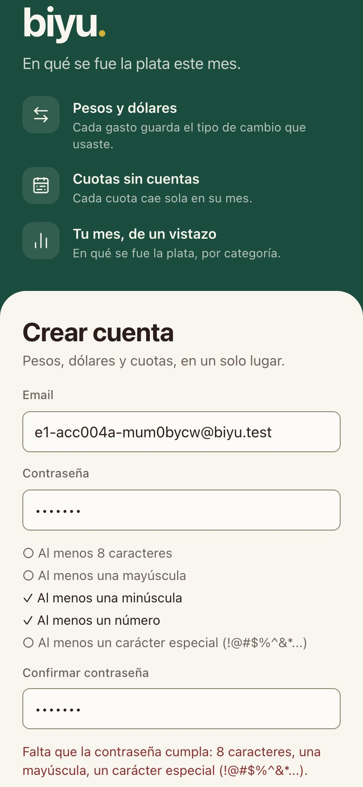<figcaption>Criterios visibles</figcaption></figure>
      <figure class="phone">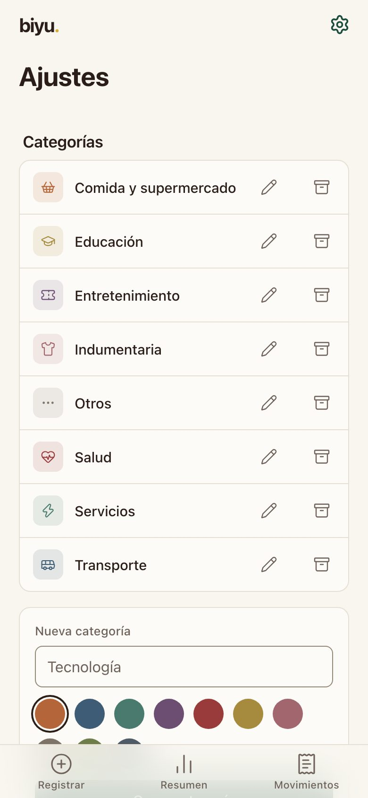<figcaption>Catálogo inicial</figcaption></figure>
    </div>
  </div>
  <div class="notes">Al registrarte ves los cinco criterios de contraseña antes de escribir, y la app te dice cuál falta. Entrás directo, sin confirmar el email, y ya tenés 8 categorías y 5 cuentas cargadas. La autorización no está en el front: Postgres filtra por usuario con Row Level Security.</div>
</section>

<section class="slide" id="registro">
  <div class="section-mark">Registro</div>
  <div class="row">
    <div style="display:grid;gap:18px">
      <h2>Un gasto en tres toques</h2>
      <ul class="points">
        <li>Monto con foco y teclado numérico</li>
        <li>Categoría con un toque en la grilla</li>
        <li>Cuenta y fecha ya precargadas</li>
      </ul>
      <p class="muted">US-01 a US-11 · registro en pasos (ADR-024)</p>
    </div>
    <div class="phones">
      <figure class="phone">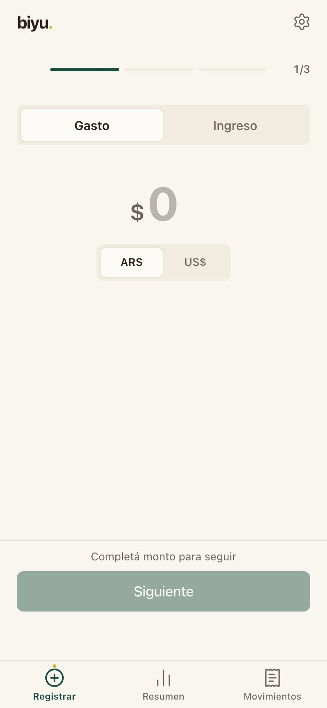<figcaption>¿Cuánto?</figcaption></figure>
      <figure class="phone">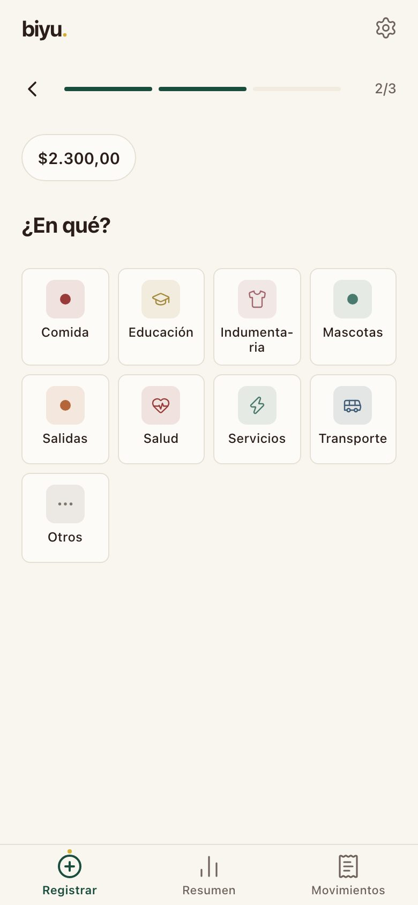<figcaption>¿En qué?</figcaption></figure>
    </div>
  </div>
  <div class="notes">El registro es la pantalla de inicio. Paso 1, el monto: el teclado ya está abierto. Paso 2, la categoría: tocar un chip avanza solo. Paso 3, revisar y guardar: la cuenta viene con la última usada y la fecha con hoy. Si el monto es cero o negativo, el botón no se habilita y dice por qué.</div>
</section>

<section class="slide" id="cuotas">
  <div class="section-mark">Cuotas</div>
  <div class="row">
    <div style="display:grid;gap:18px">
      <h2>Cuotas que no pierden centavos</h2>
      <ul class="points">
        <li>1 a 12 cuotas, solo con tarjeta de crédito</li>
        <li>Previsualización antes de guardar</li>
        <li>$100.000 en 3 = 33.333,33 + 33.333,33 + <b>33.333,34</b></li>
      </ul>
    </div>
    <div class="phones">
      <figure class="phone">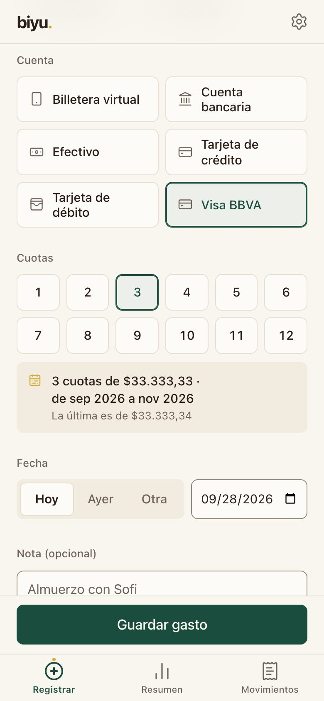<figcaption>La última absorbe el resto</figcaption></figure>
      <figure class="phone">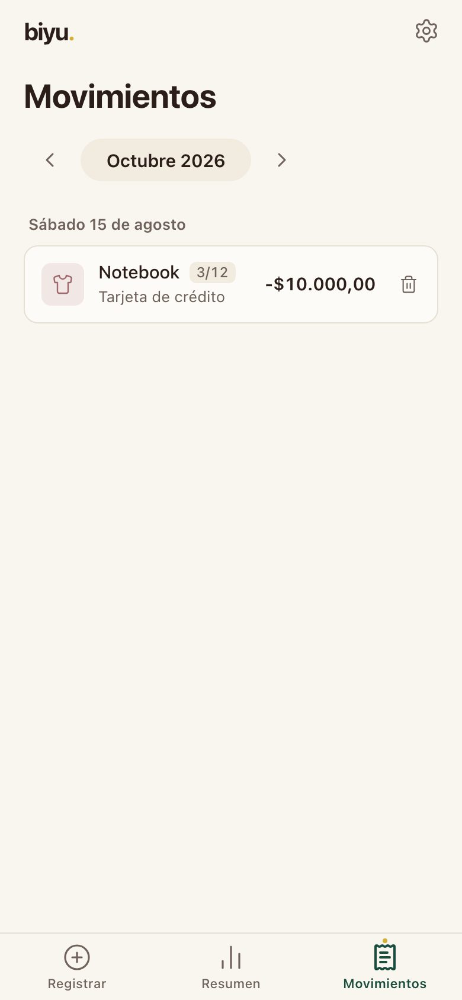<figcaption>"3/12" en el listado</figcaption></figure>
    </div>
  </div>
  <div class="notes">La regla central es que la suma de las cuotas sea exactamente el total. La última cuota absorbe el resto. Esto no lo calcula el front: lo hace una sola función de Postgres, create_transaction, que crea la compra y sus cuotas en la misma transacción.</div>
</section>

<section class="slide" id="dolares">
  <div class="section-mark">Monedas</div>
  <div class="row">
    <div style="display:grid;gap:18px">
      <h2>El dólar se congela en la compra</h2>
      <ul class="points">
        <li>Tipo de cambio de referencia por mes, en Ajustes</li>
        <li>Se sugiere al registrar y se puede pisar</li>
        <li>Cambiar la referencia no reescribe el pasado</li>
      </ul>
    </div>
    <div class="phones">
      <figure class="phone">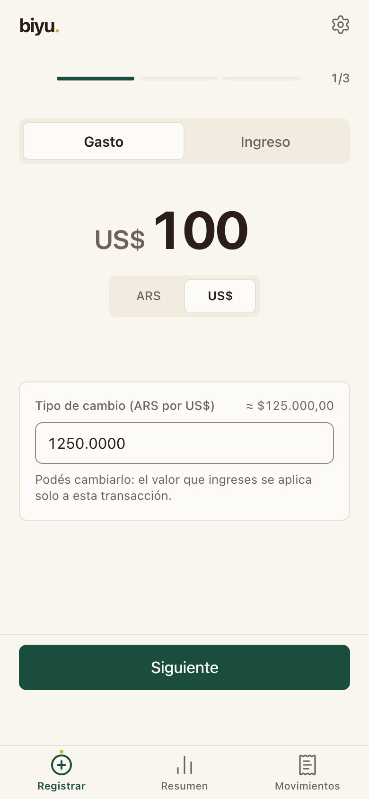<figcaption>US$ con TC sugerido</figcaption></figure>
      <figure class="phone">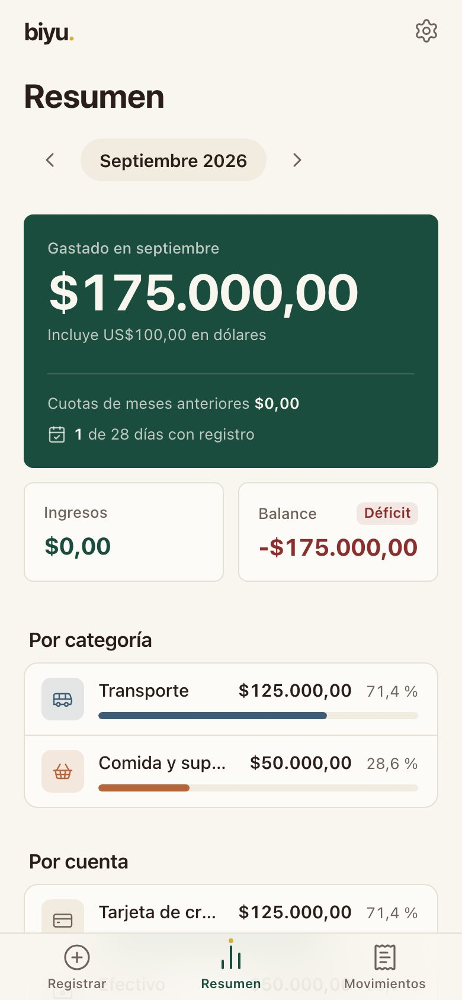<figcaption>Total en pesos</figcaption></figure>
    </div>
  </div>
  <div class="notes">No usamos una API de cotización: el usuario carga su tipo de cambio de referencia por mes. Al registrar en dólares se sugiere ese valor y se guarda junto con la transacción. Si después cambia la referencia, lo ya cargado no se toca. El total del mes está en pesos y abajo dice cuánto fue en dólares.</div>
</section>

<section class="slide" id="resumen">
  <div class="section-mark">Resumen</div>
  <div class="row">
    <div style="display:grid;gap:18px">
      <h2>El mes, de un vistazo</h2>
      <ul class="points">
        <li>Total gastado, ingresos y balance</li>
        <li>Cuotas heredadas de meses anteriores</li>
        <li>Por categoría y por cuenta</li>
        <li>El mes vive en la URL: se puede compartir</li>
      </ul>
    </div>
    <div class="phones">
      <figure class="phone">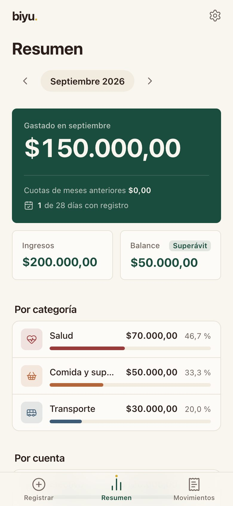<figcaption>Resumen de septiembre</figcaption></figure>
      <figure class="phone">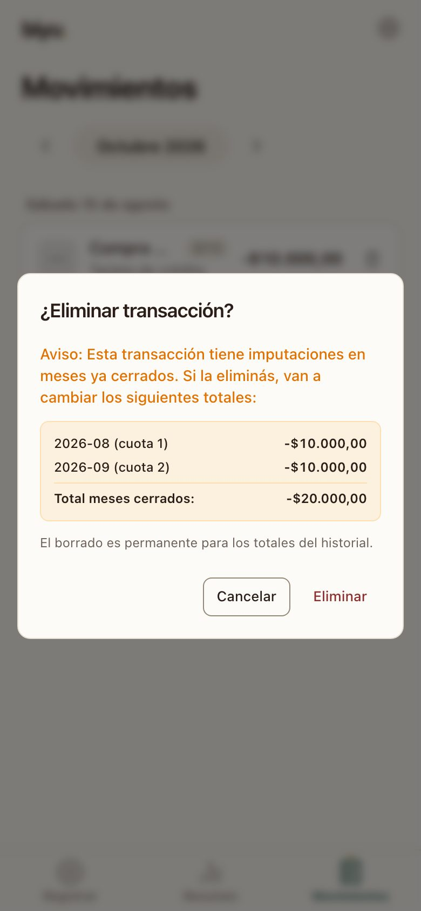<figcaption>Baja con aviso</figcaption></figure>
    </div>
  </div>
  <div class="notes">El resumen responde la pregunta del producto. La tarjeta verde es lo que se gastó y cuánto de eso venía de cuotas anteriores. Al eliminar una compra la baja es lógica, y si toca meses ya cerrados la app avisa exactamente qué totales cambian.</div>
</section>

<!-- ============ b) REQUERIMIENTOS ============ -->
<section class="slide divider" id="sec-b">
  <div class="kicker">Parte 2 de 5</div>
  <h2>Cómo definimos los requerimientos</h2>
  <p>De la pre-entrega a un issue por historia, con la IA escribiendo y otra IA criticando.</p>
</section>

<section class="slide" id="req-flujo">
  <div class="section-mark">Del requerimiento al issue</div>
  <h2>De la pre-entrega a un issue por historia</h2>
  <div class="flow">
    <span>22 FR + 20 NFR</span><i>→</i><span>Spec de comportamiento</span><i>→</i><span>Historias con criterios</span><i>→</i><span>Issue US-nn</span><i>→</i><span>Matriz de trazabilidad</span>
  </div>
  <ul class="points">
    <li>La spec es la fuente de verdad: <b>docs/02-behavior-spec.md</b></li>
    <li>Cada FR y NFR tiene su versión y su estado en <b>08-trazabilidad.md</b></li>
    <li>Los casos se derivan de la spec, no del código</li>
  </ul>
  <div class="notes">No arrancamos del código. De los requerimientos de la pre-entrega sale la spec de comportamiento, con historias, happy y sad paths y escenarios BDD. Cada historia de V1 es un issue con criterios de aceptación y prioridad. La matriz de trazabilidad une requerimiento, historia, issue y casos, y cualquier requerimiento sin historia queda como un hueco visible.</div>
</section>

<section class="slide" id="req-ia">
  <div class="section-mark">Requerimientos con IA</div>
  <h2>La IA redacta, otra IA la critica</h2>
  <div class="grid2">
    <div class="card"><span class="tag">/to-spec · optimizador-prompts</span><h3>Redacción</h3><p>Borradores de spec e historias a partir de la pre-entrega y la conversación del equipo.</p></div>
    <div class="card"><span class="tag">agente spec-critic</span><h3>Crítica</h3><p>Busca ambigüedad, requisitos no verificables y bordes faltantes. Encontró 2 bloqueantes en el catálogo.</p></div>
    <div class="card"><span class="tag">/speckit-checklist</span><h3>Calidad de los NFR</h3><p>Checklist de redacción: si cada NFR tiene umbral medible y en qué versión se prueba (#73).</p></div>
    <div class="card"><span class="tag">agente spec-consistency-checker</span><h3>Consistencia</h3><p>Controla que los docs no se contradigan: glosario, C*, I*, ADR.</p></div>
  </div>
  <div class="notes">Usamos la IA de punta a punta, pero en roles separados. Un agente escribe y otro, con otro prompt, ataca lo escrito. spec-critic encontró por ejemplo que US-02 no tenía ningún caso y que la invariante I6 nunca se probaba del lado de los ingresos. speckit-checklist decidió qué NFR se prueban en V1 y cuáles en V2.</div>
</section>

<section class="slide" id="req-cambios">
  <div class="section-mark">Requerimientos</div>
  <h2>Lo que cambió al bajar a historias</h2>
  <div class="tbl"><table>
    <thead><tr><th>Pre-entrega</th><th>Decisión</th><th>Por qué</th></tr></thead>
    <tbody>
      <tr><td>FR-09 · 2 a 24 cuotas</td><td>1 a 12</td><td>Valores límite claros: 0, 1, 2, 12, 13</td></tr>
      <tr><td>FR-12 · cotización por API</td><td>TC manual por mes</td><td>Sin dependencia externa que falle</td></tr>
      <tr><td>FR-20 · torta por categoría</td><td>Barras</td><td>Decisión #78</td></tr>
      <tr><td>FR-01 · letra y número</td><td>US-66 y US-67</td><td>Contrastado con el ejemplo TaskMaster</td></tr>
      <tr><td>PWA en V2</td><td>Diferida a V3</td><td>ADR-022</td></tr>
    </tbody>
  </table></div>
  <div class="notes">La pre-entrega es una foto y no se reescribe. Las diferencias quedan escritas en la matriz de trazabilidad con su justificación. La más interesante es la de contraseñas: al comparar contra la historia de ejemplo de la cátedra vimos que faltaban la confirmación y los criterios claros, y agregamos US-66 y US-67.</div>
</section>

<!-- ============ c) IMPLEMENTACIÓN ============ -->
<section class="slide divider" id="sec-c">
  <div class="kicker">Parte 3 de 5</div>
  <h2>Cómo la implementamos</h2>
  <p>Agentes, skills, el proceso de cada issue, los prompts y lo que salió mal.</p>
</section>

<section class="slide" id="impl-agentes">
  <div class="section-mark">Agentes y modelos</div>
  <h2>Agentes y modelos</h2>
  <div class="stats">
    <div class="stat hero"><span class="n">Claude Code</span><span class="l">agente principal (terminal y app de escritorio)</span></div>
    <div class="stat"><span class="n">49</span><span class="l">commits co-escritos con Claude Opus 5.5</span></div>
    <div class="stat"><span class="n">26</span><span class="l">commits co-escritos con Claude Sonnet 5</span></div>
  </div>
  <p class="muted">Codex y Antigravity como alternativas del equipo: AGENTS.md y la carpeta <b>.agents/</b> hacen que cualquier herramienta lea las mismas reglas, skills y hooks.</p>
  <div class="notes">El agente principal fue Claude Code, con Opus 5.5 para lo más complejo y Sonnet 5 para tareas acotadas. El repo está preparado para que cualquiera del equipo use otra herramienta: CLAUDE.md tiene las reglas, AGENTS.md las redirige, y .agents/ es una copia neutral de skills, agentes y hooks.</div>
</section>

<section class="slide" id="impl-setup">
  <div class="section-mark">Setup agéntico</div>
  <h2>Reglas que el agente no puede saltear</h2>
  <div class="grid2">
    <div class="card"><span class="tag">CLAUDE.md</span><h3>Reglas no negociables</h3><p>Montos en Decimal, escrituras por RPC, today como parámetro, data-testid en todo.</p></div>
    <div class="card"><span class="tag">7 subagentes</span><h3>Revisores con un solo foco</h3><p>rls-migration-reviewer, domain-purity-reviewer, pgtap-writer, spec-critic, test-adversary…</p></div>
    <div class="card"><span class="tag">18 skills</span><h3>Conocimiento empaquetado</h3><p>supabase, new-test-case, new-adr, mobile-native, emil-design-eng, playwright-cli…</p></div>
    <div class="card"><span class="tag">hooks + pre-commit</span><h3>Barreras automáticas</h3><p>Bloquean secretos, .env y datos reales en un repo público; lint de migraciones.</p></div>
  </div>
  <div class="notes">El setup es lo que hace que el vibe coding sea controlable. Las reglas viven en CLAUDE.md. Los subagentes son revisores con un solo trabajo: el de migraciones revisa RLS y atomicidad antes de cada commit de SQL. Los hooks frenan secretos antes de que lleguen a git. Además usamos el MCP context7 para documentación de librerías.</div>
</section>

<section class="slide" id="impl-proceso">
  <div class="section-mark">Proceso de desarrollo</div>
  <h2>Un issue, una rama, un PR</h2>
  <div class="flow">
    <span>Issue US-nn</span><i>→</i><span>Prompt por issue</span><i>→</i><span>Rama us/nn</span><i>→</i><span>PR con Closes #n</span><i>→</i><span>CI: Vitest + pgTAP + build</span><i>→</i><span>Merge y deploy en Vercel</span>
  </div>
  <ul class="points">
    <li>Tablero: Backlog · En desarrollo · Listo para probar · En prueba · Defecto abierto · Hecho</li>
    <li>"Hecho" incluye los casos ejecutados</li>
    <li>Nadie prueba lo que implementó: los casos los ejecuta otra sesión</li>
  </ul>
  <div class="notes">Cada historia se trabaja en su rama y termina en un PR con Closes. La CI corre los tests del dominio, los de la base y el build. El prompt de cada issue prohíbe explícitamente diseñar o ejecutar casos: eso lo hace otra sesión, sin memoria de la implementación, para no caer en el sesgo de que el agente pruebe lo que él mismo escribió.</div>
</section>

<section class="slide" id="impl-prompts">
  <div class="section-mark">Prompts utilizados</div>
  <h2>Tres familias de prompts</h2>
  <div class="tbl"><table>
    <thead><tr><th>Tipo</th><th>Qué pedía</th><th>Cuándo</th></tr></thead>
    <tbody>
      <tr><td><b>Setup 1</b></td><td>Instalar automatizaciones y copiarlas a .agents/ para cualquier IA; revisar skills de frontend</td><td>21/09</td></tr>
      <tr><td><b>Setup 2</b></td><td>Armar épicas, historias y tareas en el Kanban con gh, y el plan con spec-kit</td><td>25/09</td></tr>
      <tr><td><b>Proyecto 1–4</b></td><td>Historias como issues · casos de prueba · implementación · ejecución y reportes</td><td>17/09</td></tr>
      <tr><td><b>Por issue</b></td><td>Misma plantilla: contexto, rama, reglas, detalle, tests, PR, "no diseñes casos"</td><td>26–28/09</td></tr>
    </tbody>
  </table></div>
  <div class="notes">Los prompts de proyecto se escribieron con la skill optimizador-prompts a partir de la consigna y se pasaron por el humanizador. Los de cada issue siguen una misma plantilla: qué leer, en qué rama, qué reglas no romper, qué herramientas usar, qué tests correr y qué no hacer. Esa plantilla es la que hizo que 70 PRs salieran con la misma forma.</div>
</section>

<section class="slide" id="prompt-ej1">
  <div class="section-mark">Issues #35 a #38 (cuotas)</div>
  <pre class="prompt">Implementá los issues <mark>#35, #37, #36 y #38</mark> de Joaconz/Biyu, en ese orden, en esta sesión.
Van en una sola rama `us/35-cuotas` y un solo PR.

Contexto: leé AGENTS.md y CLAUDE.md completos, después `gh issue view` de cada issue
y solo los docs que citan (FR, I*, C*, ADR).
Verificá que el formulario de registro ya esté en main; <mark>si no, pará y avisame</mark>.

Reglas: montos con Decimal (nunca number); lógica en `src/domain/` o Postgres;
escrituras solo por RPC; `data-testid` en todo elemento interactivo; datos ficticios.

- Agregá las cuotas como un componente propio enchufado al formulario, sin reescribirlo.
  <mark>Mariana agrega en paralelo los campos de USD: no toques esa parte.</mark>
- #38: la lógica de prorrateo ya existe y está testeada. No la reescribas.

Antes del PR corré `npm test`, `npm run test:db` y `npm run build`.
<mark>No diseñes ni ejecutes casos de prueba CP-*</mark>: eso es #74 y #75, en otra sesión.</pre>
  <div class="notes">Prompt real del 26/09, resumido. Tres cosas que funcionaron: le decimos qué leer y qué no, marcamos el límite con el trabajo en paralelo de otra compañera, y le prohibimos diseñar casos de prueba. El resultado fue el PR #99, con un commit por issue y los tests de pgTAP pasando de 29 a 37.</div>
</section>

<section class="slide" id="prompt-ej2">
  <div class="section-mark">Issue #41 (baja de compra en cuotas)</div>
  <pre class="prompt">Implementá el issue #41 de Joaconz/Biyu. Trabajá solo este issue, en la rama
`us/41-baja-compra-en-cuotas`.

Este issue <mark>depende del #66 (Valentina)</mark>: tiene que estar mergeado en main con la RPC
`delete_transaction`. Si no está, pará y avisame. <mark>No crees otra RPC de baja: reusá esa.</mark>

Herramientas de `.agents/`:
- Agregás un test de base: agente `pgtap-writer`.
- Si tocás `supabase/migrations/`: skill `supabase-postgres-best-practices` antes de escribir,
  agente `rls-migration-reviewer` antes de commitear.

Detalle: al eliminar una compra en cuotas, <mark>ninguna de sus imputaciones cuenta en ningún KPI</mark>,
incluidas las de meses ya transcurridos (escenario BDD de la spec).</pre>
  <div class="notes">Segundo ejemplo, del 28/09. Muestra cómo el prompt encadena dependencias entre integrantes, reutiliza lo que ya existe en vez de dejar que el agente invente otra RPC, y nombra qué agente o skill usar en cada situación. El criterio de aceptación viene directo del escenario BDD de la spec.</div>
</section>

<section class="slide" id="impl-problemas">
  <div class="section-mark">Problemas encontrados</div>
  <h2>Lo que salió mal, y qué aprendimos</h2>
  <div class="grid2">
    <div class="card"><span class="tag">ADR-016/018 → ADR-019</span><h3>Volvimos a Supabase</h3><p>Una API propia en Python sumaba despliegues, CORS y auth propia. Se revirtió.</p></div>
    <div class="card"><span class="tag">PR #136 → #141 · DEF-003</span><h3>Una historia se perdió en un merge</h3><p>US-66 se mergeó contra una rama ya mergeada y nunca llegó a producción.</p></div>
    <div class="card"><span class="tag">PR #85 · PR #134 · PR #108</span><h3>Trabajo en paralelo</h3><p>Un revert de rutas, dos ADR con el mismo número y un PR duplicado.</p></div>
    <div class="card"><span class="tag">PR #161 · ADR-024</span><h3>Rediseño tardío</h3><p>Registro en pasos después de diseñar los casos: hubo que actualizar pasos y oráculos.</p></div>
  </div>
  <div class="notes">El más instructivo es el de US-66: GitHub mostraba el PR como mergeado, pero contra una rama que ya se había mergeado 11 segundos antes, así que el código quedó huérfano. Lo detectó la ejecución de pruebas, no la implementación. También tuvimos colisiones por trabajar en paralelo, como dos ADR con el mismo número. Y el rediseño de la UI llegó después del catálogo, así que varios casos tuvieron que actualizar sus pasos.</div>
</section>

<!-- ============ d) CASOS ============ -->
<section class="slide divider" id="sec-d">
  <div class="kicker">Parte 4 de 5</div>
  <h2>Los casos de prueba</h2>
  <p>74 casos derivados de la spec, no del código.</p>
</section>

<section class="slide" id="casos-num">
  <div class="section-mark">El catálogo</div>
  <h2>74 casos, derivados de la spec</h2>
  <div class="tbl"><table>
    <thead><tr><th>Módulo</th><th class="num">Casos</th><th class="num">Alta</th><th class="num">Media</th><th class="num">Baja</th></tr></thead>
    <tbody>
      <tr><td>Acceso y autorización</td><td class="num">12</td><td class="num">9</td><td class="num">3</td><td class="num">0</td></tr>
      <tr><td>Configuración</td><td class="num">15</td><td class="num">6</td><td class="num">7</td><td class="num">2</td></tr>
      <tr><td>Registro y baja</td><td class="num">16</td><td class="num">6</td><td class="num">7</td><td class="num">3</td></tr>
      <tr><td>Cuotas</td><td class="num">13</td><td class="num">10</td><td class="num">2</td><td class="num">1</td></tr>
      <tr><td>Monedas</td><td class="num">7</td><td class="num">5</td><td class="num">1</td><td class="num">1</td></tr>
      <tr><td>Dashboard</td><td class="num">11</td><td class="num">3</td><td class="num">6</td><td class="num">2</td></tr>
      <tr><td><b>Total</b></td><td class="num"><b>74</b></td><td class="num"><b>39</b></td><td class="num"><b>26</b></td><td class="num"><b>9</b></td></tr>
    </tbody>
  </table></div>
  <p class="muted">68 del catálogo de V1 y 6 nuevos para US-66 y US-68. Hay 39 positivos, 19 negativos y 16 de límite; 36 son de camino feliz.</p>
  <div class="notes">El catálogo se diseñó con la skill new-test-case antes de ejecutar nada, y lo revisó spec-critic. Para esta entrega sumamos 6 casos a las dos historias que no tenían ninguno: US-66 (confirmar contraseña) y US-68 (configuración inicial).</div>
</section>

<section class="slide" id="casos-anatomia">
  <div class="section-mark">Anatomía de un caso</div>
  <div class="row">
    <div style="display:grid;gap:16px">
      <h2>CP-CUO-005</h2>
      <p class="lead">El resto lo absorbe la última cuota</p>
      <ul class="points">
        <li><b>Historia:</b> US-15 · FR-10, FR-11</li>
        <li><b>Invariante:</b> I1, la suma es exacta</li>
        <li><b>Técnica:</b> valores límite · Prioridad Alta</li>
      </ul>
    </div>
    <div class="tbl"><table>
      <thead><tr><th>Paso</th><th>Resultado esperado</th></tr></thead>
      <tbody>
        <tr><td>Guardar $100.000 en 3 cuotas</td><td>$33.333,33 + $33.333,33 + <b>$33.333,34</b></td></tr>
        <tr><td>Sumar las imputaciones</td><td>Exactamente $100.000,00</td></tr>
      </tbody>
    </table></div>
  </div>
  <div class="notes">Cada caso declara historia, invariante, técnica, tipo, prioridad, precondiciones, datos, pasos y un resultado esperado concreto. Un resultado como "el monto correcto" no alcanza: escribimos el número. Los casos negativos llevan además una variante API: el mismo ataque directo contra Supabase, salteando la UI.</div>
</section>

<section class="slide" id="casos-tabla">
  <div class="section-mark">Técnica: tabla de decisión</div>
  <h2>Moneda × tipo de cambio: seis casos</h2>
  <div class="tbl"><table>
    <thead><tr><th>Moneda</th><th>TC de referencia</th><th>TC a mano</th><th>Esperado</th></tr></thead>
    <tbody>
      <tr><td>ARS</td><td>—</td><td>no</td><td><span class="pill ok">Se guarda</span></td></tr>
      <tr><td>ARS</td><td>—</td><td>sí</td><td><span class="pill bad">Rechazado (I5)</span></td></tr>
      <tr><td>USD</td><td>existe</td><td>no</td><td><span class="pill ok">Usa la referencia</span></td></tr>
      <tr><td>USD</td><td>existe</td><td>sí</td><td><span class="pill ok">Gana el manual</span></td></tr>
      <tr><td>USD</td><td>no existe</td><td>no</td><td><span class="pill bad">Rechazado, pide TC</span></td></tr>
      <tr><td>USD</td><td>no existe</td><td>sí</td><td><span class="pill ok">Usa el manual</span></td></tr>
    </tbody>
  </table></div>
  <div class="notes">La fila "ARS con tipo de cambio" es la que nadie escribe si improvisa, y es un caso negativo real. CP-MON-002 recorre las seis filas por la UI, y las dos que se rechazan se prueban además directo contra la base.</div>
</section>

<!-- ============ e) REPORTE ============ -->
<section class="slide divider" id="sec-e">
  <div class="kicker">Parte 5 de 5</div>
  <h2>Qué pasó al ejecutarlos</h2>
  <p>Todo el catálogo contra main del 28 de septiembre.</p>
</section>

<section class="slide" id="reporte-total">
  <div class="section-mark">Resultado general, main 44f1519 del 28/09</div>
  <h2>67 de 70 ejecutados pasan</h2>
  <div class="stats">
    <div class="stat"><span class="n">74</span><span class="l">planificados</span></div>
    <div class="stat"><span class="n">70</span><span class="l">ejecutados, 95 %</span></div>
    <div class="stat hero"><span class="n">67</span><span class="l">PASSED, 96 % de los ejecutados</span></div>
    <div class="stat"><span class="n bad">3</span><span class="l">FAILED</span></div>
    <div class="stat"><span class="n warn">4</span><span class="l">BLOCKED (US-68)</span></div>
  </div>
  <div class="bar" role="img" aria-label="67 PASSED, 3 FAILED, 4 BLOCKED sobre 74">
    <div style="width:90.5%;background:var(--green)"></div><div style="width:4.1%;background:var(--bad)"></div><div style="width:5.4%;background:var(--warn)"></div>
  </div>
  <div class="legend"><span><b style="background:var(--green)"></b>PASSED 67</span><span><b style="background:var(--bad)"></b>FAILED 3</span><span><b style="background:var(--warn)"></b>BLOCKED 4</span></div>
  <div class="notes">Ejecutamos los 74 contra la app local con el código de main del 28/09. Se ejecutaron 70; los 4 bloqueados son de US-68, que no existe todavía. De los 68 casos originales pasan 66. Los tres que fallan son CP-ACC-004 (el servidor acepta contraseñas débiles), CP-CFG-004 (falta la marca de archivada en el historial) y CP-CFG-011 (no aparece el setup de US-68).</div>
</section>

<section class="slide" id="reporte-modulo">
  <div class="section-mark">Por módulo</div>
  <h2>Dónde falla</h2>
  <div class="tbl"><table>
    <thead><tr><th>Módulo</th><th class="num">Casos</th><th class="num">PASSED</th><th class="num">FAILED</th><th class="num">BLOCKED</th></tr></thead>
    <tbody>
      <tr><td>Acceso y autorización</td><td class="num">12</td><td class="num">11</td><td class="num">1</td><td class="num">0</td></tr>
      <tr><td>Configuración</td><td class="num">15</td><td class="num">9</td><td class="num">2</td><td class="num">4</td></tr>
      <tr><td>Registro y baja</td><td class="num">16</td><td class="num">16</td><td class="num">0</td><td class="num">0</td></tr>
      <tr><td>Cuotas</td><td class="num">13</td><td class="num">13</td><td class="num">0</td><td class="num">0</td></tr>
      <tr><td>Monedas</td><td class="num">7</td><td class="num">7</td><td class="num">0</td><td class="num">0</td></tr>
      <tr><td>Dashboard</td><td class="num">11</td><td class="num">11</td><td class="num">0</td><td class="num">0</td></tr>
    </tbody>
  </table></div>
  <p class="muted">Pruebas automatizadas sobre el mismo commit: Vitest 239/239 y pgTAP 158/158.</p>
  <div class="notes">El núcleo de cálculo (cuotas, monedas, dashboard) pasa completo. Los problemas están en los bordes: configuración y acceso. Las suites automatizadas, 239 tests de dominio y 158 de base, también están en verde.</div>
</section>

<section class="slide" id="reporte-defectos">
  <div class="section-mark">Defectos</div>
  <h2>16 defectos abiertos, ninguno crítico</h2>
  <div class="stats">
    <div class="stat"><span class="n">0</span><span class="l">Crítica (DEF-004 corregido)</span></div>
    <div class="stat"><span class="n bad">1</span><span class="l">Alta, DEF-017, US-68</span></div>
    <div class="stat"><span class="n warn">7</span><span class="l">Media</span></div>
    <div class="stat"><span class="n">8</span><span class="l">Baja</span></div>
  </div>
  <ul class="points">
    <li><b>4 corregidos y confirmados:</b> DEF-001 (404), DEF-002, DEF-003, DEF-004 (NaN)</li>
    <li><b>4 nuevos:</b> US-68 sin implementar, TC con 5 decimales, "Salud" y "salud", TC sugerido sin formato</li>
    <li>Negativos y bordes atacados: 8 exploraciones extra, 2 dieron defectos</li>
  </ul>
  <div class="notes">De los 16 defectos de la primera pasada, 4 ya están corregidos y los volvimos a probar: por ejemplo el NaN, que era el único crítico. Los otros 12 se siguen reproduciendo. Encontramos 4 nuevos. La severidad la pone quien reporta; la prioridad la decide el Product Owner.</div>
</section>

<section class="slide" id="reporte-salida">
  <div class="section-mark">Criterios de salida de V1</div>
  <h2>V1 no cierra por un solo punto</h2>
  <div class="tbl"><table>
    <thead><tr><th>Criterio</th><th>Estado</th></tr></thead>
    <tbody>
      <tr><td>Cero defectos críticos abiertos</td><td><span class="pill ok">Cumple</span></td></tr>
      <tr><td>Cero defectos altos abiertos, o justificados</td><td><span class="pill bad">DEF-017</span></td></tr>
      <tr><td>Todos los casos de prioridad Alta ejecutados</td><td><span class="pill ok">39 de 39</span></td></tr>
      <tr><td>Toda invariante de V1 con un caso ejecutado</td><td><span class="pill ok">Cumple</span></td></tr>
    </tbody>
  </table></div>
  <p class="muted">Dos caminos: implementar US-68, o que el PO la pase a V2 con la justificación escrita.</p>
  <div class="notes">En la pasada anterior fallaban dos criterios: el defecto crítico y un caso Alta bloqueado. Los dos se resolvieron: el NaN se corrigió y CP-REG-013 se ejecutó con un reloj simulado. Hoy solo falta decidir qué hacemos con US-68.</div>
</section>


<section class="slide" id="guia">
  <div class="section-mark">Guía de la entrega</div>
  <h2>Dónde está cada cosa</h2>
  <div class="tbl"><table>
    <thead><tr><th>Lo que pide el enunciado</th><th>Archivo</th></tr></thead>
    <tbody>
      <tr><td>Historias de usuario de la V1</td><td><span class="path">entrega-1/01-historias-de-usuario.md</span></td></tr>
      <tr><td>Especificación de casos de prueba</td><td><span class="path">entrega-1/02-especificacion-casos-de-prueba.xlsx</span></td></tr>
      <tr><td>Ejecución de casos de prueba</td><td><span class="path">entrega-1/03-ejecucion-casos-de-prueba.xlsx</span></td></tr>
      <tr><td>Reportes de defectos</td><td><span class="path">entrega-1/04-reportes-de-defectos.xlsx</span></td></tr>
      <tr><td>Reporte de ejecución</td><td><span class="path">entrega-1/05-reporte-de-ejecucion.md</span></td></tr>
      <tr><td>Evidencia de cada caso</td><td><span class="path">entrega-1/evidencia/</span> y <span class="path">ejecucion/resultados.json</span></td></tr>
      <tr><td>La app funcionando</td><td><span class="path">src/</span> y <span class="path">supabase/</span>, deploy en biyu-rust.vercel.app</td></tr>
      <tr><td>Requerimientos y trazabilidad</td><td><span class="path">docs/02-behavior-spec.md</span> y <span class="path">docs/08-trazabilidad.md</span></td></tr>
      <tr><td>Setup de IA: reglas, agentes, skills</td><td><span class="path">CLAUDE.md</span>, <span class="path">.claude/</span> y <span class="path">.agents/</span></td></tr>
    </tbody>
  </table></div>
  <p class="muted">Cada documento de la Parte B está en .md para leer y en .xlsx con la plantilla de la cátedra. Todo entró en el PR #164.</p>
  <div class="notes">Esta es la guía para el docente: cada punto del enunciado tiene su archivo. Los IDs son los mismos en todos: la historia US-nn lleva al caso CP-xxx, al resultado y, si falló, al defecto DEF-nnn.</div>
</section>

<section class="slide" id="mapa-repo">
  <div class="section-mark">Cómo está organizado el repositorio</div>
  <h2>Un repo, cuatro zonas</h2>
  <div class="map">
    <div class="zone">
      <h3>Producto</h3>
      <p>La app que usa la gente.</p>
      <ul>
        <li><span class="path">src/domain/</span><span>Reglas puras: cuotas, montos, validación. Sin reloj ni UI</span></li>
        <li><span class="path">src/pages, src/components</span><span>Pantallas de React con data-testid</span></li>
        <li><span class="path">supabase/migrations/</span><span>Schema, RLS y las RPC de Postgres</span></li>
      </ul>
    </div>
    <div class="zone">
      <h3>Calidad</h3>
      <p>Lo que prueba que funciona.</p>
      <ul>
        <li><span class="path">tests/</span><span>Vitest: 239 tests de dominio</span></li>
        <li><span class="path">supabase/tests/</span><span>pgTAP: 158 tests de invariantes y RLS</span></li>
        <li><span class="path">e2e/</span><span>Prueba de humo contra el deploy</span></li>
        <li><span class="path">.github/workflows/</span><span>CI en cada PR</span></li>
      </ul>
    </div>
    <div class="zone">
      <h3>Requerimientos</h3>
      <p>La fuente de verdad, antes del código.</p>
      <ul>
        <li><span class="path">docs/00 a 11</span><span>Brief, spec, arquitectura, modelo, plan de testing, trazabilidad, catálogo</span></li>
        <li><span class="path">docs/adr/</span><span>24 decisiones con su porqué</span></li>
        <li><span class="path">specs/nfr/</span><span>Checklist de calidad de los NFR</span></li>
      </ul>
    </div>
    <div class="zone hl">
      <h3>Setup de IA</h3>
      <p>Cómo trabaja el agente.</p>
      <ul>
        <li><span class="path">CLAUDE.md, AGENTS.md</span><span>Reglas que no se negocian</span></li>
        <li><span class="path">.claude/agents/</span><span>7 subagentes revisores</span></li>
        <li><span class="path">.claude/skills/</span><span>18 skills, copiadas en .agents/ para otras IA</span></li>
        <li><span class="path">.claude/hooks/</span><span>Frenan secretos y revisan migraciones</span></li>
      </ul>
    </div>
  </div>
  <p class="muted">Y <span class="path">entrega-1/</span> junta lo que se entrega hoy: sale de estas cuatro zonas.</p>
  <div class="notes">El repo refleja el proceso. Requerimientos primero, en docs. Después el producto, con la lógica de negocio separada de la UI para poder probarla sola. La calidad corre en la CI con cada PR. Y el setup de IA es lo que hace que cinco personas con agentes distintos trabajen con las mismas reglas.</div>
</section>

<!-- ============ DEMO ============ -->
<section class="slide divider" id="demo">
  <div class="kicker">Para cerrar</div>
  <h2>La app, en vivo</h2>
  <ul class="points">
    <li>Crear cuenta y ver los criterios de contraseña</li>
    <li>Registrar un gasto en 12 cuotas con la tarjeta</li>
    <li>Un gasto en dólares con el TC del mes</li>
    <li>El resumen del mes y las cuotas heredadas</li>
    <li>Eliminar una compra con cuotas en meses cerrados</li>
  </ul>
  <p>biyu-rust.vercel.app</p>
  <div class="notes">Guion de 3 minutos, con montos ficticios: 1) crear una cuenta y mostrar cómo se marcan los criterios; 2) registrar $120.000 en 12 cuotas y mostrar la previsualización; 3) registrar USD 100 con el tipo de cambio sugerido; 4) ir al Resumen y moverse de mes; 5) eliminar una compra en cuotas desde un mes posterior para mostrar el aviso. Tener una cuenta de demo ya creada por si falla la red.</div>
</section>

<script>
(() => {
  const slides = [...document.querySelectorAll('.slide')];
  const counter = document.getElementById('counter');
  const notesBtn = document.getElementById('toggle-notes');
  let current = 0;
  const update = () => { counter.textContent = `${current + 1} / ${slides.length}`; };
  const go = (i) => { current = Math.max(0, Math.min(slides.length - 1, i)); slides[current].scrollIntoView({ block: 'start' }); update(); };
  const io = new IntersectionObserver((entries) => {
    entries.forEach((e) => { if (e.isIntersecting && e.intersectionRatio > 0.5) { current = slides.indexOf(e.target); update(); } });
  }, { threshold: [0.5] });
  slides.forEach((s) => io.observe(s));
  const toggleNotes = () => {
    const on = document.body.classList.toggle('show-notes');
    notesBtn.setAttribute('aria-pressed', String(on));
    try { localStorage.setItem('biyu-notes', on ? '1' : '0'); } catch (e) {}
  };
  try { if (localStorage.getItem('biyu-notes') === '1') toggleNotes(); } catch (e) {}
  document.getElementById('prev').addEventListener('click', () => go(current - 1));
  document.getElementById('next').addEventListener('click', () => go(current + 1));
  notesBtn.addEventListener('click', toggleNotes);
  document.addEventListener('keydown', (e) => {
    if (e.target.closest('input, textarea')) return;
    if (['ArrowRight', 'ArrowDown', 'PageDown', ' '].includes(e.key)) { e.preventDefault(); go(current + 1); }
    if (['ArrowLeft', 'ArrowUp', 'PageUp'].includes(e.key)) { e.preventDefault(); go(current - 1); }
    if (e.key.toLowerCase() === 'n') toggleNotes();
  });
  slides.forEach((sl, i) => {
    const m = document.createElement('div'); m.className = 'slide-meta';
    m.innerHTML = '<span class="brand">biyu<span class="dot">.</span></span><span class="pg">' + (i + 1) + ' de ' + slides.length + '</span>';
    sl.prepend(m);
  });
  update();
})();
</script>
